IPOO - Cap. 3 Interação entre Objetos
Aula 3.1 - Teórica
DAC - ICET - Universidade Federal de Lavras
29/08/2026
Como estudar?
Será que preciso dizer de novo as dicas? :)
- É essencial praticar enquanto estuda, usando o BlueJ.
- Ajuda muito se você ler o capítulo do livro da disciplina para tirar dúvidas e complementar o que está sendo estudado.
- Use um caderno e caneta para anotar os principais conceitos e eventuais dúvidas que surgirem.
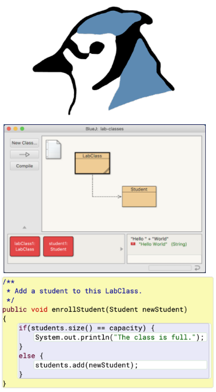
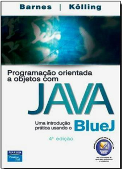
Principais Conceitos do Capítulo
- Abstração
- Modularização
- Criação de objetos
- Chamadas de métodos
- Depuradores
Construções Java do capítulo
- Classes como tipos, operadores lógicos (
&&e||), concatenação de strings, construção de objetos (operadornew), chamadas de métodos,this.
Nós já temos uma boa noção do que são objetos,
- como são implementados através de classes
- e como são utilizados individualmente.
Nós agora vamos ver que, para criar aplicações interessantes,
- precisamos usar objetos que cooperam entre si para realizar alguma tarefa.
Abstração e Modularização
Para entender como podemos criar aplicações com objetos que cooperam entre si,
- vamos começar com um exemplo bem simples.
Um visor de um relógio digital que mostra horas e minutos, separados por dois-pontos.
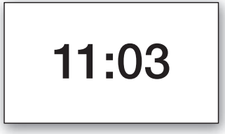
Em um primeiro momento poderíamos pensar em criar uma única classe para representar o visor do relógio.
- Mas vamos usar uma abordagem diferente.
- O objetivo é usar esse exemplo bem simples para demonstrar como podemos tratar um problema, dividindo-o em subproblemas menores, que são mais fáceis de resolver.
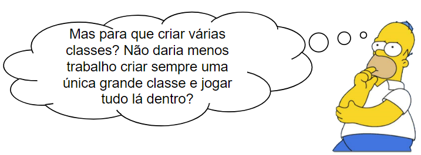
O motivo para criarmos mais de uma classe em vez de fazer tudo em uma só é a complexidade.
À medida que avançarmos na disciplina, vamos criar programas cada vez mais complexos.
- Problemas simples como o da máquina de ingressos podem ser resolvidos com uma única classe.
- Mas para projetos maiores é muito difícil conseguir tratar todos os detalhes ao mesmo tempo.
- O que fazemos então é identificar subcomponentes do problema que possam ser tratados em classes separadas.
Para lidar com a complexidade, usamos a abstração.
O problema a ser resolvido, às vezes é muito grande.
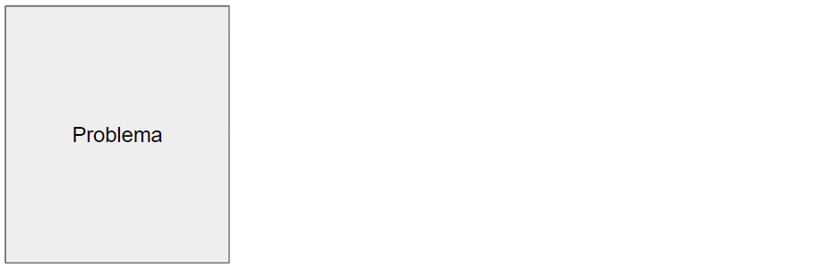
O problema a ser resolvido, às vezes é muito grande.
Nós então dividimos o problema subproblemas.
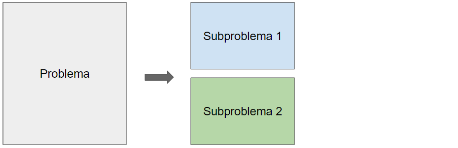
O problema a ser resolvido, às vezes é muito grande.
Nós então dividimos o problema subproblemas.
E dividimos novamente em problemas ainda menores.
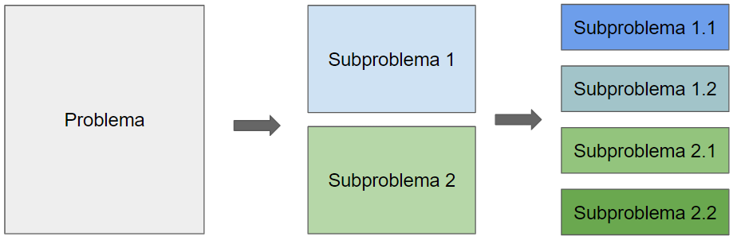
Fazemos isso até que eles sejam pequenos o suficiente para que consigamos lidar com eles.
Fazemos isso até que eles sejam pequenos o suficiente para que consigamos lidar com eles.
Depois dos subproblemas estarem resolvidos, não pensamos mais nos detalhes deles.
Depois dos subproblemas estarem resolvidos, não pensamos mais nos detalhes deles.
E os utilizamos como blocos (caixa-preta) para resolver os problemas maiores.
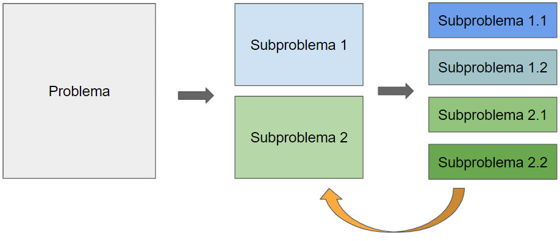
Depois dos subproblemas estarem resolvidos, não pensamos mais nos detalhes deles.
E os utilizamos como blocos (caixa-preta) para resolver os problemas maiores.
Até termos todo o problema resolvido.
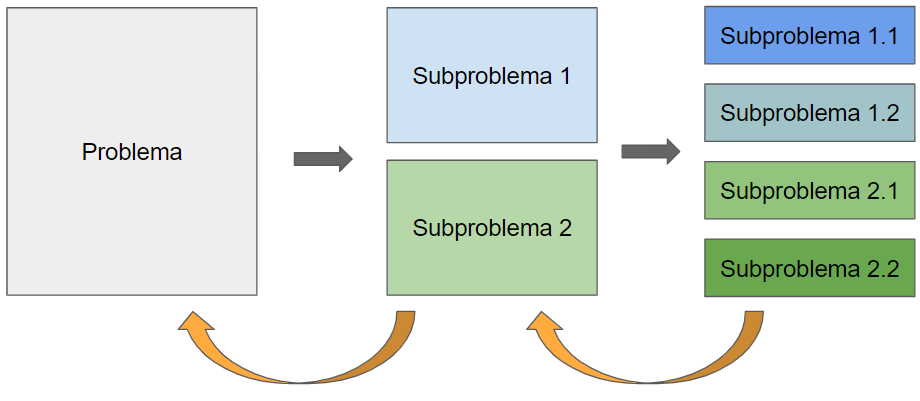
Essa técnica de dividir o problema em problemas menores é chamada de dividir para conquistar.
Podemos entender isso melhor com um exemplo.
Vamos pensar em uma equipe de engenheiros projetando um carro.
- Eles pensam nas partes do carro: design, tamanho, local do motor, quantidade de assentos, espaçamento entre rodas, etc.
1
Outra equipe de engenheiros projeta o motor.
- Eles pensam em cada parte do motor: as cilindradas, o mecanismo de injeção, a eletrônica, etc.
- Para eles o motor não é uma peça única, e sim um sistema complexo de várias partes
- Uma delas pode ser a vela de ignição, por exemplo.
Há então uma terceira equipe de engenheiros (muitas vezes de outra empresa) que projeta a vela de ignição.
- Eles pensam na vela como um sistema com várias partes.
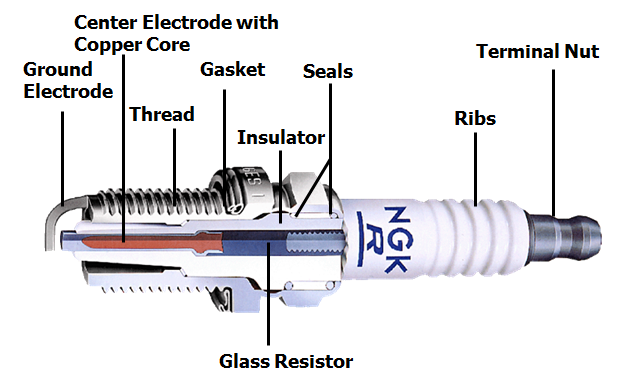
- Eles podem ter feito estudos complexos para saber o metal certo a ser usado, e como é o processo detalhado de fabricação e instalação.
A mesma coisa acontece com as outras partes do carro.
Um designer de alto nível vai pensar no pneu como uma peça única.
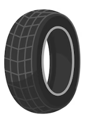
Mas outro engenheiro estuda a composição química ideal para produzir o material certo para os pneus.
- Para ele, o pneu é uma coisa complexa.
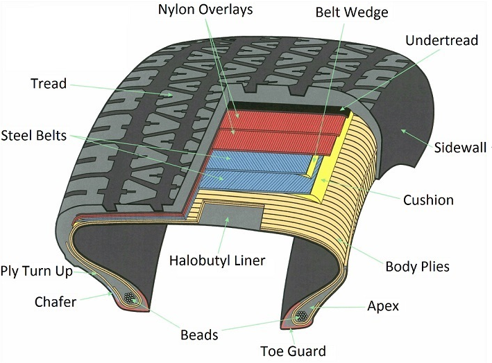
Já a empresa que fabrica o carro, vai apenas comprar o pneu da fabricante de pneus e enxergá-lo como uma única peça.
- Isto é abstração!
Os engenheiros da fabricante de carros abstraem (ignoram) os detalhes da fabricação dos pneus para conseguirem se concentrar nos detalhes de criação da roda, por exemplo.
- Já os designers ignoram os detalhes da roda ou do motor para se concentrar no design do carro como um todo.
- Eles se preocupam apenas com o tamanho do motor e das rodas.
Repare que um carro é formado por tantas partes que é praticamente impossível uma pessoa só saber todos os detalhes, de todas as partes, ao mesmo tempo.
- Se fosse assim, provavelmente carros nem seriam fabricados.
Se os carros podem ser fabricados aos milhares hoje em dia é porque os engenheiros usam modularização e abstração.
- Eles dividem o carro em módulos independentes (roda, motor, caixa de marcha, assento, etc.).
- E equipes separadas trabalham em cada módulo de forma independente.
- Quando o módulo é construído, eles usam abstração.
- Ou seja, eles enxergam o módulo como uma peça única e o utilizam para construir componentes mais complexos.
Modularização e abstração se complementam.
Conceito
Abstração é a habilidade de ignorar detalhes das partes, para focar a atenção em um nível mais alto de um problema.
Conceito
Modularização é o processo de dividir um todo em partes bem definidas que podem ser construídas e examinadas separadamente, e que interagem de formas bem definidas.
Abstração em Software
A mesma ideia de modularização e abstração do exemplo do carro é aplicada no desenvolvimento de software.
- Para conseguirmos implementar um sistema complexo, nós tentamos dividi-lo em subcomponentes que possamos programar de forma independente.
- Depois tentamos usar esses componentes, como se eles fossem partes simples, sem nos preocuparmos com seus detalhes internos.
Em POO, os componentes e subcomponentes são objetos.
- Para criar um carro completo em um sistema OO, faríamos como no exemplo da fábrica.
- Criaríamos objetos separados para motor, roda, caixa de marcha, etc.
- E usaríamos esses objetos para construir um objeto carro.
Não é simples pensar nos tipos de objetos (e, consequentemente, nas classes) que precisamos ter em um software.
- Por isso, vamos começar com o exemplo simples do mostrador do relógio.
Quiz 3.1
O conceito de abstração tem relação com:
- Prestar muita atenção aos detalhes de um problema.
- Ignorar completamente os detalhes de um problema.
- Dividir um problema em problemas menores de forma a ter diferentes níveis de atenção aos seus detalhes.
- Criar atributos abstratos.
Modularização no exemplo do relógio
Voltando ao exemplo do visor de relógio digital, qual seria a maneira mais direta de implementá-lo?
Poderíamos pensar em uma única classe que representasse os quatro dígitos do relógio, certo?
Mas vamos tentar usar modularização.
- Como você poderia dividir o “problema” de representar o visor, em subproblemas?
Repare como funcionam os dígitos das horas.
- Eles começam em 0, incrementam de 1 em 1, até chegar a 23, e depois voltam para zero.
E como funcionam os dígitos dos minutos?
- Eles começam em 0, incrementam de 1 em 1, até chegar a 59, e depois voltam para zero.
Repare que o comportamento dos dígitos das horas e dos minutos é exatamente o mesmo.
- O que muda é apenas o valor limite que faz o valor voltar para zero.
Podemos pensar então em um objeto capaz de representar um visor de dois dígitos.
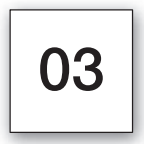
E poderíamos usar dois objetos desse tipo, um para as horas e outro para os minutos, para representar o relógio.
Implementando o visor do relógio
Precisamos então definir uma classe para representar um visor de número de dois dígitos.
- Ela poderia ter um método de acesso para retornar seu valor.
- E dois métodos modificadores:
- um para definir o valor.
- e outro para incrementá-lo (adicionar 1), zerando ao chegar no limite.
Com a classe pronta, podemos criar dois objetos dela com limites diferentes para representar o relógio.
Quais atributos são necessários na classe que representa números de dois dígitos?
- Veja que precisamos guardar o valor propriamente dito.
- E o limite que faz o valor voltar para zero.
Esses valores devem ser de que tipo?
Antes de pensar nos detalhes da classe VisorDeNumero, imagine que já temos a classe pronta.
- Como poderíamos construir um visor de relógio completo, usando essa classe?
- Precisamos de dois objetos visor de números (um para as horas e outro para os minutos).
- Portanto, cada um desses objetos deve ser um atributo na classe que representa o visor do relógio.
Repare que classes definem tipos.
- Os atributos
horaseminutossão do tipoVisorDeNumero. - Que é a classe que criamos para representar os objetos que mostram os números.
O tipo de um atributo determina o tipo dos valores que ele pode guardar.
- Se o tipo é uma classe, o atributo pode guardar objetos daquela classe.
Declaração não cria objetos
Uma declaração de um atributo ou uma variável do tipo de uma classe não cria automaticamente um objeto daquela classe.
- A princípio o atributo ou variável fica vazio.
- Portanto, no construtor da classe
VisorDeRelogioprecisaremos criar os objetos a serem guardados pelos atributos.
Conceito
Classes definem tipos. Um nome de classe pode ser usado como tipo de uma variável. Variáveis de tipo de uma classe podem guardar objetos daquela classe.
Diagramas de classe vs. diagramas de objetos
Compare as duas figuras abaixo:
- À esquerda temos o diagrama de objetos do visor de relógio.
- À direita temos o diagrama de classes para a mesma situação.
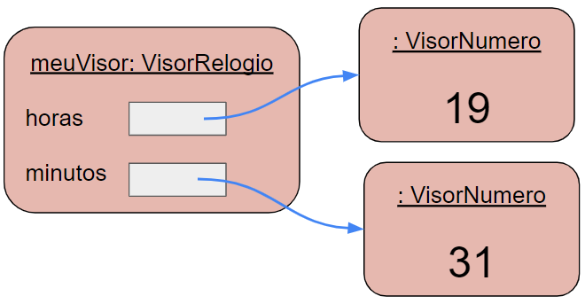
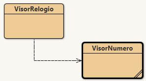
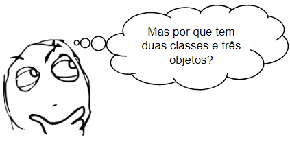
Repare que nós criamos dois objetos da mesma classe VisorDeNumero.
Os dois diagramas mostram diferentes visões do mesmo programa.
- O diagrama de classes mostra uma visão estática.
- Ou seja, representa o momento da programação, quando estamos escrevendo o código.
- Dizemos que
VisorDeRelogiousa (ou depende) deVisorDeNumero.
Quando o programa é iniciado, vamos criar um objeto VisorDeRelogio.
- E vamos implementar a classe de forma que ela crie automaticamente dois objetos
VisorDeNumero. - Portanto, o diagrama de objetos mostra uma visão dinâmica.
- Ele representa o tempo de execução, quando o programa está rodando.
Vamos avaliar o diagrama de objetos novamente, pois ele traz um detalhe importante.
- Repare que quando uma variável guarda um objeto, ela não o guarda diretamente.
- Na verdade a variável guarda uma referência (um ponteiro) para o objeto .
No diagrama a variável é representada pela caixa branca.
- E a referência do objeto pela seta.
- Portanto, repare que o objeto
VisorDeNumeroé armazenado fora do objetoVisorDeRelogio.- E a referência (o ponteiro) é que liga os dois.
Exercício
Pense no projeto de exemplo disciplina que vimos antes. Suponha que criamos um objeto Disciplina e três objetos Estudante, e matriculamos os estudantes na disciplina. Tente desenhar um diagrama de classes e um diagrama de objetos para essa situação. Explique a diferença entre os diagramas.
Exercício
Quando um diagrama de classes é alterado? E como ele é alterado?
Exercício
Quando um diagrama de objetos é alterado? E como ele é alterado?
Exercício
Escreva a declaração de um atributo orientador que guarde uma referência para um objeto Professor.
Quiz 3.2
Marque a alternativa incorreta:
- Classes definem tipos.
- Diagramas de classes dão uma visão estática do programa.
- Diagramas de objetos dão uma visão dinâmica do programa.
- Visão estática se refere ao tempo de execução do programa.
Tipos primitivos e tipos objetos
Java tem dois tipos diferentes de tipos :)
Tipos primitivos
Tipos objeto (ou tipos por referência)
Java tem dois tipos diferentes de tipos :)
Tipos primitivos
Tipos primitivos são predefinidos na linguagem Java
- Ex.:
int,boolean,double.
Java tem dois tipos diferentes de tipos :)
Tipos objeto (ou tipos por referência)
Já os tipos objeto são definidos por classes.
- Algumas classes fazem parte do Java padrão (como a
String). - E podemos criar nossas próprias classes.
Tipos objeto e tipos primitivos têm semelhanças:
- Ambos podem ser usados como tipos.
Mas se comportam de forma diferente:
- Tipos primitivos são guardados diretamente nas variáveis.
- No diagrama de objetos mostramos os valores diretamente nas caixas das variáveis.
- Já tipos objeto guardam apenas uma referência (ponteiro) para o objeto.
- No diagrama representamos com uma seta.
Conceito
Os tipos primitivos em Java não definem objetos. Tipos como int, boolean e double são os tipos primitivos mais comuns. Tipos primitos não possuem métodos.
A classe VisorDeNumero
Antes de vermos o exemplo do relógio, é importante entendermos a classe VisorDeNumero.
- E assim sabermos como ela pode ser usada para construir o relógio.
Vamos avaliar o código da classe, baixando o projeto visor-numero.
Exercício
No BlueJ acesse a opção: Exibir → Exibir terminal, e no terminal acesse Opcoes → Anotar chamadas de métodos.
Crie um objeto VisorDeNumero com limite 24 e dê o nome horas para a variável.
- Abra o inspetor e, com ele aberto, chame o método
incrementardo objeto criado. - Repare, no terminal, como é a chamada do método.
- Chame repetidamente o método
incrementaraté que ele volte para zero. Obs.: use um limite menor se estiver impaciente :)
Exercício
Crie outro objeto VisorDeNumero, com limite 60 , e dê o nome minutos.
- Chame o método
incrementardo objeto e repare como é a chamada no terminal. - Repare que você está fazendo o papel do relógio já que tem um visor de horas e um de minutos.
- O que você deveria fazer a cada chamada do método
incrementarpara o objetominutospara saber se é hora de incrementar o objeto dehoras?
Exercício
Usando o bloco de códigos do BlueJ, crie um objeto VisorDeNumero, chamado vn, com limite 6, e experimente todos os seus métodos.
Repare que o método definirValor utiliza uma expressão booleana
Em Java, os operadores lógicos são:
&&- e lógico (and em C++).
||- ou lógico (or em C++).
!- negação (not em C++).
Exercício
O que acontece quando o método definirValor é chamado com um valor inválido (experimente!).
Você acha que da forma que foi feito é uma boa solução? Consegue pensar em uma solução melhor?
Exercício
O que aconteceria se, no método definirValor, o operador >= fosse trocado por >?
Exercício
O que aconteceria se, no método definirValor, o operador && fosse trocado por ||?
Exercício
Estude a implementação dos métodos obterValorVisor e incrementar. Caso tenha dúvidas, estude as páginas 56 a 59 do livro do Barnes e Kölling (4ª ed.).
Exercício
O método obterValorVisor sempre funciona corretamente? Quais premissas ele assume? O que acontece, por exemplo, se você criar um objeto com limite 800?
A classe VisorDeRelogio
Agora que já entendemos como criar uma classe que define um visor de números de dois dígitos, vamos estudar o projeto visor-relogio.
- Ele possui a classe
VisorDeRelogioque cria dois objetos visores de números para construir o visor completo do relógio.
Exercício
Abra o inspetor para esse objeto. Com o inspetor aberto, chame os métodos do objeto, observando o atributo stringVisor no inspetor. No BlueJ, abra o arquivo README.md para entender melhor o funcionamento do projeto.
Exercício
Quantas vezes você precisa chamar o método tiqueTaque no objeto VisorDeRelogio para fazer sua hora chegar a 01:00. De que outra forma você poderia fazer o relógio mostrar esse mesmo horário?
Vamos agora estudar a classe VisorDeRelogio.
- Abra a classe e avalie todo o código.
Veja que o atributo stringVisor simula um visor físico real do relógio.
- Se esse software rodasse em um relógio de verdade, nós mostraríamos a informação no visor físico.
- Aqui, o atributo
stringVisorserve para simular o visor real do relógio.
A classe VisorDeRelogio tem mais dois atributos: horas e minutos.
- Eles guardam referências para objetos do tipo
VisorDeNumero. - O valor lógico do horário do relógio é guardado nesses dois atributos.
O digrama de objetos abaixo mostra de forma mais completa um objeto VisorDeRelogio.
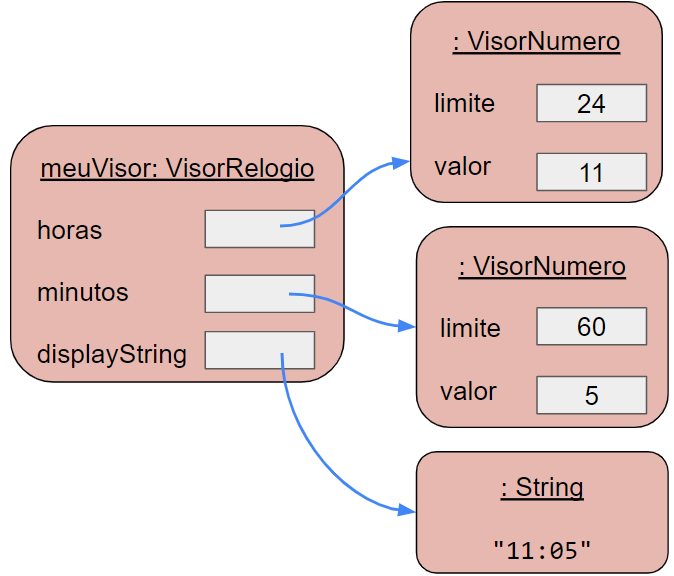
- Veja que todos os atributos são referências para outros objetos.
- Inclusive
stringVisor, já que uma string é um objeto em Java.- Obs.: por simplicidade, o diagrama não mostra a representação interna do objeto String.
Só para os curiosos
Você pode também abrir o projeto visor-relogio-com-interface-grafica. Veja que ele possui uma classe a mais que você pode experimentar e ver o que faz.
Objetos criando objetos
Vimos que um visor de relógio possui dois visores de números, para horas e minutos.
- Mas de onde vêm esses objetos no código?
Veja que, como usuários do mostrador de relógio, nós criamos apenas o objeto da classe VisorDeRelogio.
- E esperamos que os visores de números sejam criados implicitamente.
Mas, como programadores da classe VisorDeRelogio, nós precisamos fazer isso acontecer.
- Para isso, basta criarmos os objetos
VisorDeNumerodentro do construtor da classeVisorDeRelogio. - Como o construtor é chamado quando um objeto
VisorDeRelogioé criado, os visores de número serão criados automaticamente.
Vamos analisar como o construtor de VisorDeRelogio faz isso:
As duas primeiras linhas do construtor criam objetos VisorDeNumero, e os atribuem a variáveis de instância.
Repare a sintaxe do comando que cria um novo objeto:
O operador new faz duas coisas:
- Cria um novo objeto da classe nomeada (no nosso exemplo
VisorDeNumero). - Executa o construtor daquela classe.
Se o construtor da classe tiver parâmetros, os valores deles devem ser passados.
Repare, por exemplo, que o construtor da classe VisorDeNumero espera um valor inteiro como parâmetro.
Veja que da forma que fizemos, ficou como gostaríamos:
- Como usuários do
VisorDeRelogio:- Criamos apenas esse objeto, e os visores de números são criados implicitamente.
- Já como programadores da classe:
- Precisamos explicitar a criação dos objetos, escrevendo código para isso.
Obs.: ao final do construtor, o método atualizarVisor é chamado. Conversaremos sobre ele mais adiante.
Exercício
Escreva comandos em Java que declarem uma variável chamada janela, do tipo Retangulo, e então crie um objeto Retangulo e o atribua à variável. Assuma que o construtor de Retangulo tem dois parâmetros do tipo int.
Quiz 3.3
Marque a alternativa correta:
- Atributos de tipo objeto guardam referências (ponteiros) para objetos.
- Atributos de tipo primitivo guardam referências (ponteiros) para objetos primitivos.
- Objetos só podem criar outros objetos dentro de construtores.
- Objetos são criados usando o operador
create.
Múltiplos construtores
Ao criar objetos da classe VisorDeRelogio, usando o BlueJ, você deve ter notado que há duas opções no menu para criar o objeto.
Isso acontece porque VisorDeRelogio tem dois construtores.
- Eles servem para fornecer formas alternativas de inicializar um objeto
VisorDeRelogio.- Com o construtor sem parâmetros, criamos um relógio com hora inicial 00:00.
- Já usando o segundo construtor, podemos criar um relógio com hora inicial diferente.
É comum que classes tenham vários construtores para dar várias opções de criação dos seus objetos.
- Para isso funcionar, cada construtor deve ter um conjunto diferente de parâmetros.
- Damos a isso o nome de sobrecarga de construtores.
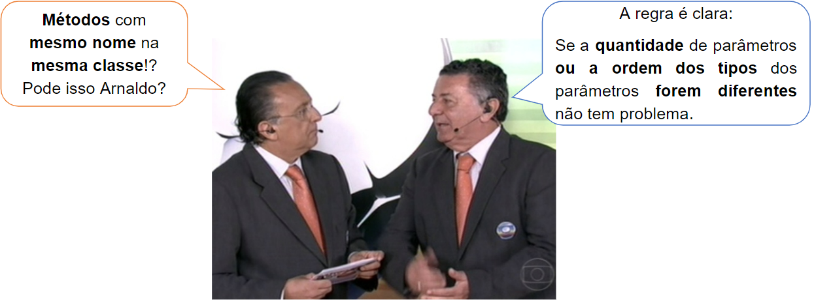
Assim como os construtores, métodos também podem ser sobrecarregados.
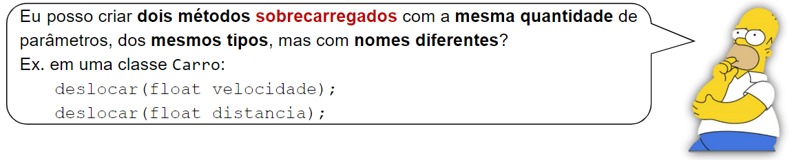
O que pode e o que não pode ser feito em termos de sobrecarga tem a ver com o que o compilador consegue identificar.
Imagine a chamada abaixo:
Como o compilador conseguiria definir qual dos métodos está sendo chamado?
- O compilador não consegue!
- Portanto, não é possível criar dois métodos sobrecarregados dessa forma.
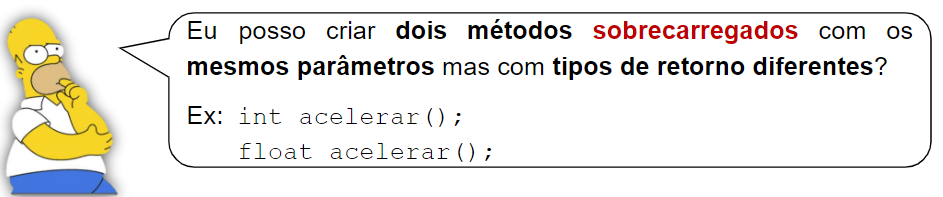
Mais uma vez vamos pensar em um exemplo de chamada:
Nesse caso, parece que seria possível pois o compilador sabe que a variável a é do tipo int.
Mas, na verdade, você não é obrigado a usar o valor retornado por uma chamada de método.
A chamada acima, por exemplo, é válida,
- e, nesse caso, o compilador não consegue definir qual método será chamado.
- Portanto, não é possível declarar métodos sobrecarregados dessa forma.
Conceito
Sobrecarga: Uma classe pode ter mais de um construtor, ou mais de um método com o mesmo nome, desde que cada um tenha um conjunto diferente de tipos de parâmetros (ou seja, a quantidade ou a ordem dos tipos dos parâmetros precisa ser diferente).
Exercício
Avalie o segundo construtor no código da classe VisorDeRelogio. Explique o que ele faz e como ele o faz.
Identifique as semelhanças e diferenças entre os dois construtores. Porque o método atualizarVisor não é chamado no segundo construtor, por exemplo?
Chamadas de métodos
A última linha do construtor de VisorDeRelogio tem o comando atualizarVisor.
Este comando é uma chamada de método.
Você já deve ter visto que a classe VisorDeRelogio tem um método com a seguinte assinatura:
Portanto, o último comando no construtor, chama este método.
- Como o método está na mesma classe, a essa operação damos o nome de chamada de método interno.
Uma chamada de método interno tem a seguinte sintaxe:
Repare que uma chamada de método interno não usa variável, nem ponto.
- Não é necessário usar variável porque o objeto chama o método dele mesmo.
Métodos podem ter parâmetros ou não.
- Nesse exemplo, como o método não tem parâmetros, não passamos nenhum valor na chamada do método.
Quando há uma chamada de método, o método correspondente é executado.
- E, então, a execução retorna para onde o método foi chamado e continua depois dela.
- O método correspondente precisa ter o mesmo nome e a mesma sequência de tipos de parâmetros.
- Já que podem existir métodos sobrecarregados.
Vamos agora avaliar o código do método tiqueTaque:
Se este visor estivesse conectado a um relógio de verdade, este método seria chamado a cada 60 segundos por um temporizador eletrônico do relógio.
- Aqui, nós mesmos chamamos o método para testar o visor.
A primeira linha do método chama o comando incrementar do objeto minutos.
- Veja então que, dessa forma, quando um dos métodos do
VisorDeRelogioé chamado, ele, por sua vez, chama um método de outro objeto como parte da tarefa.
Uma chamada a um método de outro objeto é uma chamada de método externo.
- Esse tipo de chamada tem a seguinte sintaxe:
Essa sintaxe é conhecida como notação de ponto (dot notation).
- Usamos o nome do objeto, seguido de ponto, seguindo do nome do método, seguido dos parâmetros do método.
- Repare que usamos o nome do objeto e não da classe.
Veja que, quando usamos o nome de objeto, temos uma chamada de método externo.
- O que é bem diferente de uma chamada de método interno.
- Porque, ao chamar o método externo, estamos pedindo a um objeto
VisorDeNumeropara fazer parte da tarefa completa.
Podemos dizer que a tarefa de manter as horas é dividida entre as classes VisorDeRelogio e VisorDeNumero.
- Este é um exemplo prático do princípio de dividir e conquistar que vimos no início do capítulo ao discutirmos sobre abstração.
Repare que a linha seguinte do método tiqueTaque faz outra chamada de método externo.
- O método retorna o valor atual dos minutos.
- Se ele acabou de ir para zero, é hora de incrementar as horas, e isso é feito em seguida.
Podemos agora entender os demais métodos da classe.
- Identifique neles onde ocorrem chamadas de método interno e chamadas de método externo.
Conceito
Métodos podem chamar outros métodos da mesma classe como parte de sua implementação. Chamamos isso de chamada de método interno.
Conceito
Métodos podem chamar métodos de outros objetos usando notação de ponto. Chamamos isso de chamada de método externo.
Exercício
Suponha que exista uma variável chamada imp1 do tipo Impressora, que referencia um objeto impressora, cuja classe tem métodos com as seguintes assinaturas:
Escreva duas possíveis chamadas para cada um desses métodos.
Exercício
Abra o projeto casa e avalie a classe Figura. Que tipos de objetos são criados no construtor de Figura?
Exercício
Liste todas as chamadas de métodos externos que são feitas no método desenhar da classe Figura para o objeto Triangulo chamado telhado.
Quiz 3.4
Marque a alternativa incorreta:
- Construtores e métodos podem ser sobrecarregados.
- Métodos sobrecarregados são aqueles que têm muitos comandos.
- Métodos sobrecarregados são métodos de uma mesma classe que possuem o mesmo nome.
- Objetos podem chamar métodos de outros objetos através de chamadas de método externo.
Recapitulando o visor de relógio
É importante reforçarmos como o projeto do visor de relógio usa o conceito de abstração para dividir o problema em problemas menores.
- Repare que, no código da classe
VisorDeRelogio, criamos objetosVisorDeNumerosem nos preocupar sobre os detalhes internos desses objetos. - Depois chamamos métodos (
incrementareobterValor) dos objetos para fazer o que precisamos.- Nesse ponto, assumimos que o método
incrementarvai mudar corretamente o valor, sem preocuparmos com como ele faz isso.
- Nesse ponto, assumimos que o método
Em projetos reais, muitas vezes classes diferentes são feitas por pessoas diferentes.
- Se tivéssemos feito assim para o exemplo do visor de relógio, o que as duas pessoas precisariam entrar em acordo?
- Precisariam concordar, apenas, sobre as assinaturas de método e o que os métodos fazem.
- Não seria necessário discutir como eles fazem.
- Feito isso, uma pessoa poderia implementar os métodos e a outra apenas os usaria.
O conjunto dos métodos (assinaturas) que um objeto disponibiliza para outros objetos é chamado de interface.
- Esse conceito traz um poder enorme para a Orientação a Objetos.
- Você poderá conhecê-lo melhor e utilizar todo o seu poder na disciplina de Práticas de POO. 😉
Exercício de Implementação 1
Mude o relógio para que ele funcione como relógios americanos, mostrando 12 horas em vez de 24.
Repare que isso pode ser mais difícil do que parece, depois da meia-noite e do meio-dia, o relógio deve mostrar 12:30 e não 00:30. Portanto, os minutos devem ir de 0 a 59, mas as horas devem ir de 1 a 12.
(Opcional) Exercício de Implementação 2
Há pelo menos duas formas de fazer o exercício anterior. Você poderia armazenar as horas com valores entre 1 e 12. Ou poderia deixar o relógio funcionando internamente com um relógio de 24 horas e tratar apenas a stringVisor para mostrar horas no formato esperado de 12 horas.
Implemente as duas opções (você deve ter dois projetos separados no BlueJ, um com cada implementação).
Qual opção é mais fácil? Qual é melhor? Por que?
(Opcional) Exercício - Desafio
Suponha que uma classe Arvore tenha um atributo do tipo Triangulo chamado folhas e um atributo do tipo Quadrado chamado tronco. O construtor de Arvores não espera nenhum parâmetro, e seu construtor cria objetos Triangulo e Quadrado para seus atributos.
Usando o projeto figuras, crie uma classe Arvore que corresponda a essa descrição. Neste exercício, não é necessário definir nenhum método, e nem tratar a forma da árvore.
(Opcional) Exercício - Desafio
Agora complete a classe Arvore do exercício anterior. O construtor deve mover o tronco para debaixo das folhas e fazer ambos serem exibidos. Faça isso criando um método chamado configurar e incluindo uma chamada a este método no construtor. Mude o tamanho do triângulo de forma que a árvore se pareça um pinheiro.